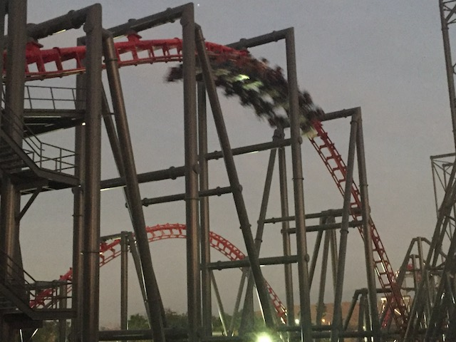
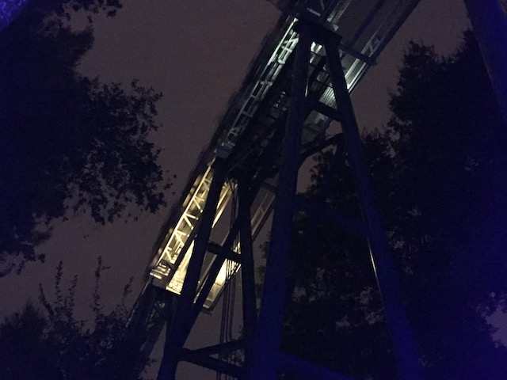
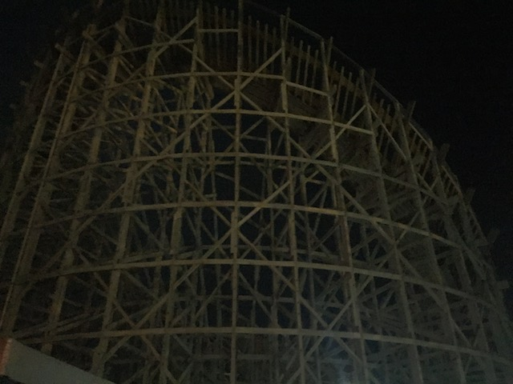

| |
Fall 2017 Photos
Knotts Scary Farm Fright Fest
All right. We're now at our second park. Six Flags Magic Mountain. Nothing too special today, though Fright Fest is here, and it's always good to get more Halloween fun.
 ARE YOU F*CKING KIDDING ME!!? IT'S OCTOBER!!! HALLOWEEN HASN'T EVEN HAPPENED YET!!! I know that Christmas time is great and all, I love it. BUT FOR F*CKS SAKE!!! KEEP IT IN DECEMBER!!!
ARE YOU F*CKING KIDDING ME!!? IT'S OCTOBER!!! HALLOWEEN HASN'T EVEN HAPPENED YET!!! I know that Christmas time is great and all, I love it. BUT FOR F*CKS SAKE!!! KEEP IT IN DECEMBER!!!
Ooh. Looking foreward to seeing all this lit up at night.
 OK. We're at one of the biggest coaster parks in the country. So yeah. Of course we're going to do one of their star attractions. Twisted Collosus.
OK. We're at one of the biggest coaster parks in the country. So yeah. Of course we're going to do one of their star attractions. Twisted Collosus.
Funny they did all the maintanance work earlier in the year on Tidal Wave, just so it can be open for the Fall (though to be fair, it did run late in the summer).
In a shocking twist, I actually wound up not doing any of the Fright Fest mazes. I know I went in expecting to do them. But I just did Knotts Scary Farm, and those mazes are much better. Combine that with the fact that I'm still in financial lockdown, and I spent a lot of money in October, and I decided to sit out the Fright Fest mazes this year. They probably would've been a letdown after Knotts Scary Farm anyways. Plus, I've done a lot of them.

But hey. More good news. X2 does have its Fright Fest audio. Well, at least part of it. It had the audio on the lifthill and brake run. But the actual ride had no audio. Eh, that's fine. Those are the times where it really matters, though you do notice not having Beastie Boys playing in the background (or Drowning Pool in the case of Fright Fest).
 Hey Evan. Coming up to see you at Viper. =P
Hey Evan. Coming up to see you at Viper. =P

I know part of me was looking foreward to trying the Gargoyles Halloween VR. But in all honesty, just having Revolution work and not have horrendous operations thanks to VR is even better. Yeah. This was the right choice.
The sun has gone down. The lights came on. Let Fright Fest begin! =)
I'd love to see the spider that created all that.
Hello pagoda on Samauri Summit that for some reason, looks cooler during Fright Fest.
 Ooh. Creepy Steampunk Spider.
Ooh. Creepy Steampunk Spider.
 What's that? You're not scared by any of the Fright Fest monsters? Well maybe Scream will do the trick. NOW SCREAM!!!
What's that? You're not scared by any of the Fright Fest monsters? Well maybe Scream will do the trick. NOW SCREAM!!!
Well, we are here for Fright Fest. Not just roller coasters. Let's check out some of the scare areas.
Hey, they did a fairly good job here. OK. Not as good as the scare zones at Knotts Scary Farm, but I still enjoyed it all.
I know you're lurking around here somewhere Antonio. >=)

Hey look. Apocinator is finally open again.
I see you getting in the Halloween spirit. Hanging that vampire cutout in the station. Very spooky. ;)
OK. These people suck, but I'll take them over those Acapella people anyday.
Home
|